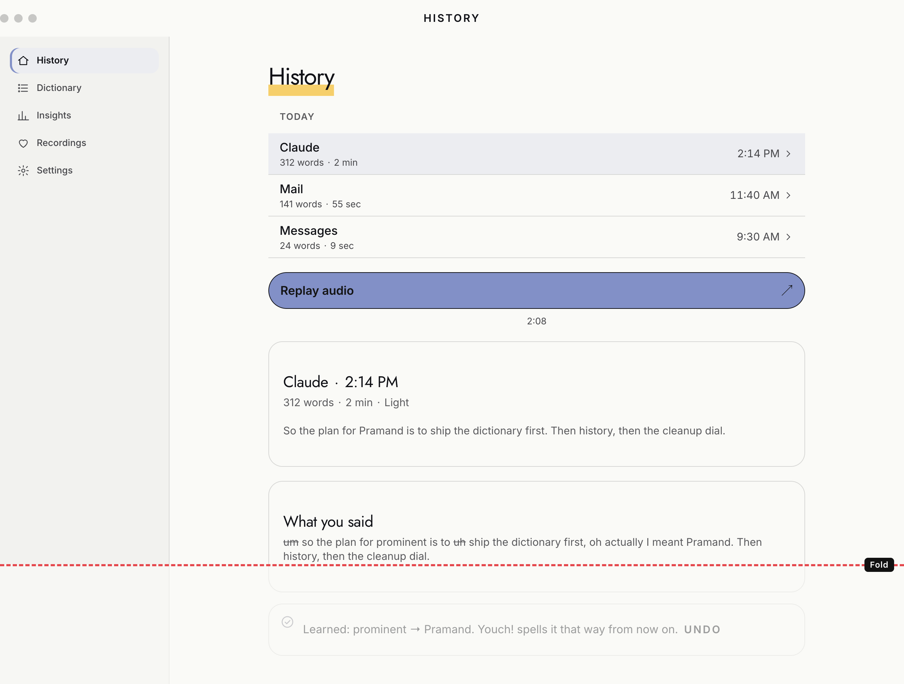
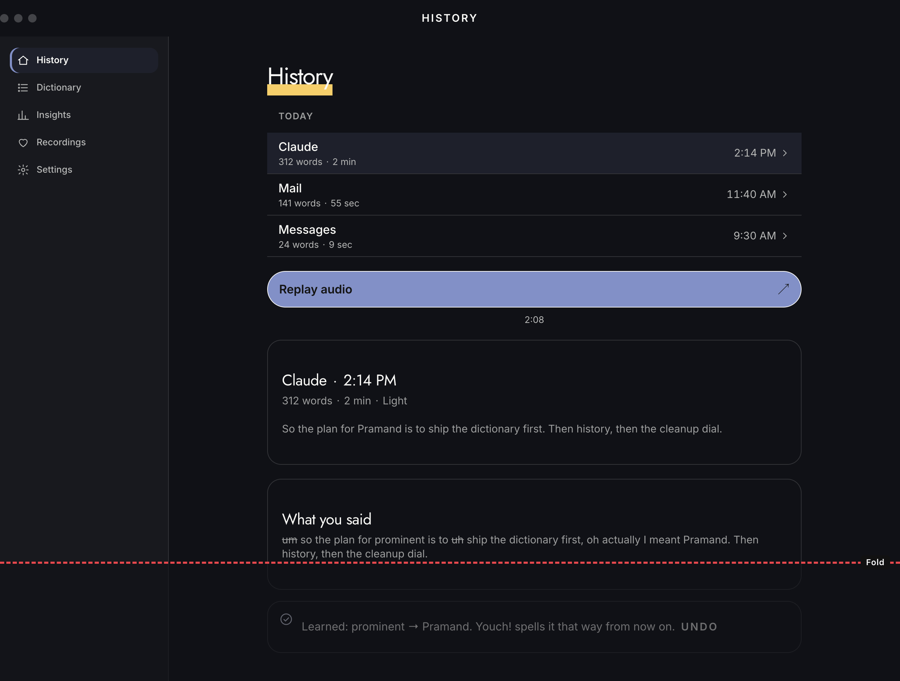
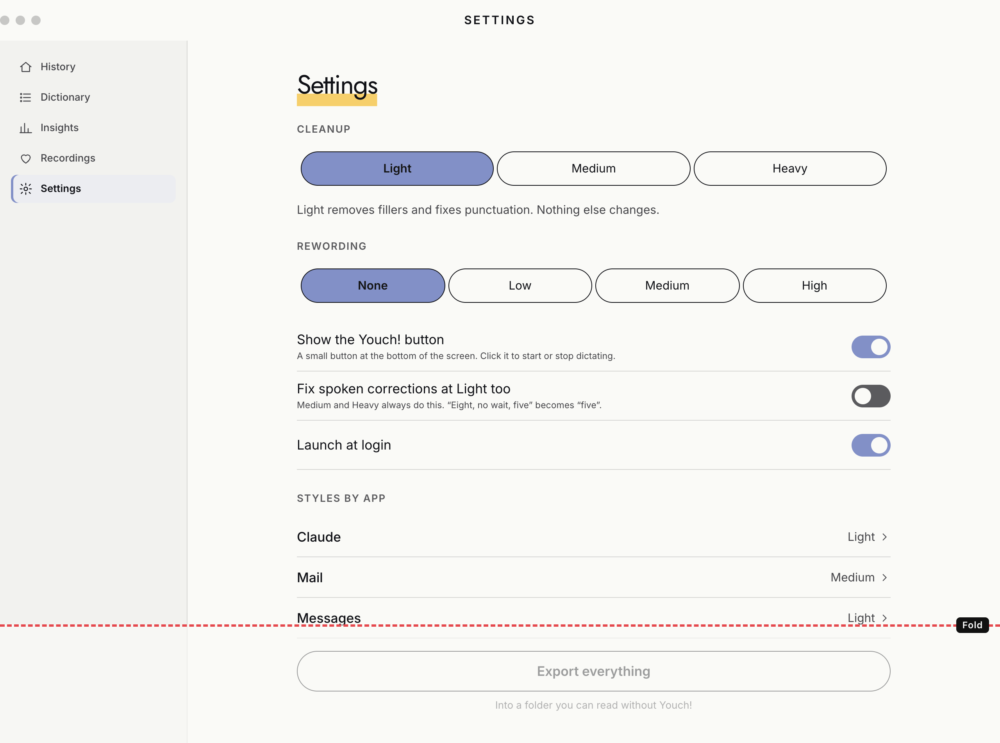
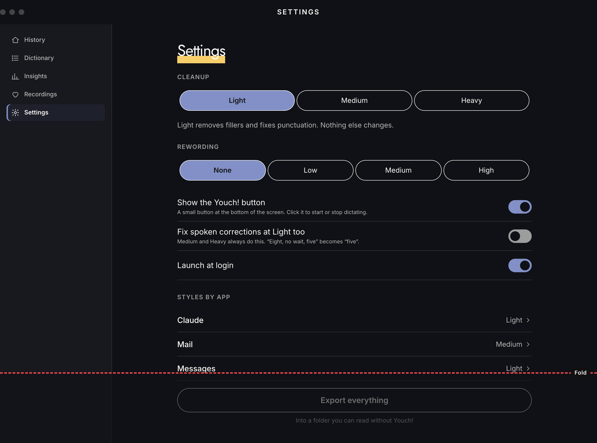
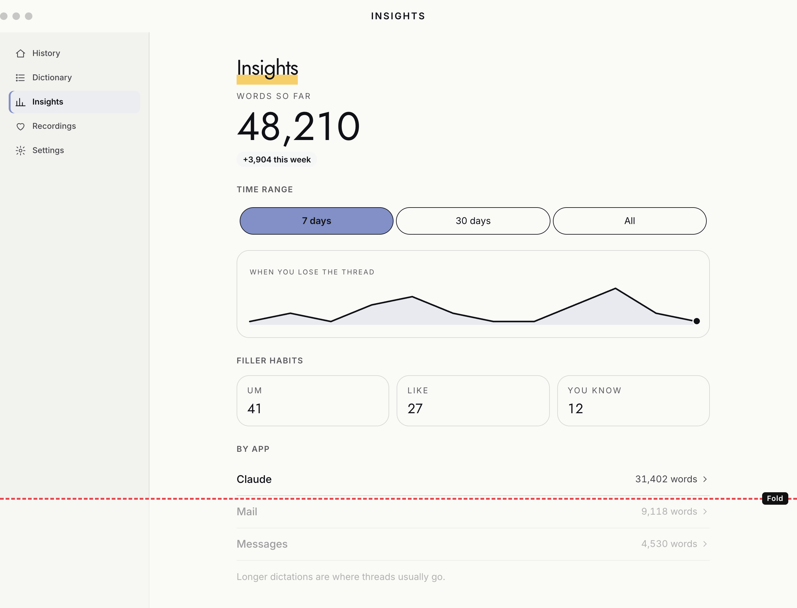
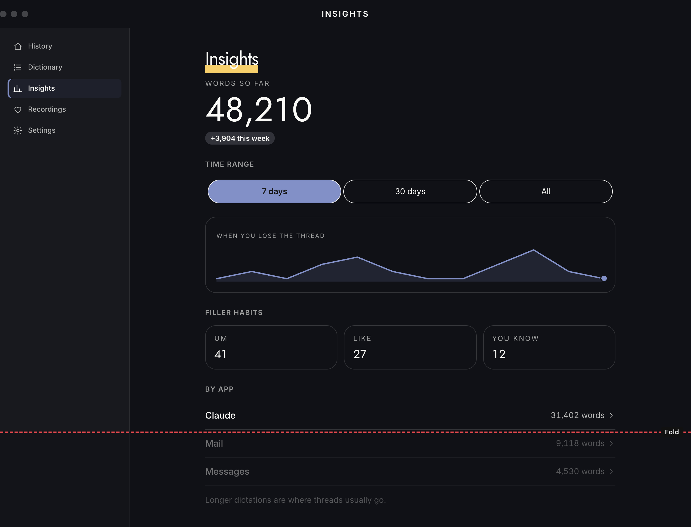
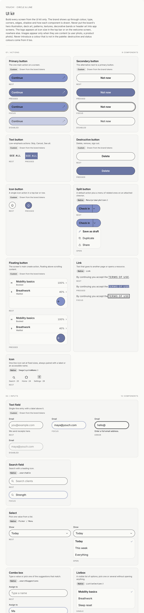
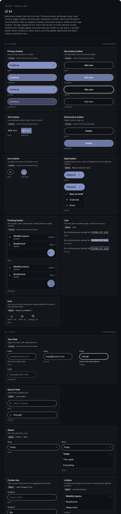

Find a past dictation, compare what was pasted with what you said, and fix a word once so Youch! learns it.


Choose how much Youch! tidies and rewords, and the few switches that change how it behaves.


Show how you think out loud: how much you've said, when you lose the thread, and your filler habits.



